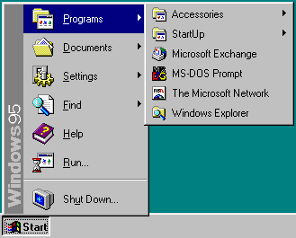
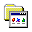
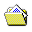
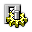
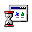
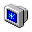

Windows 95 Menu Sandbox
← Home
Table of Contents
Some Inspirational Images from Windows 95
Live Win95 Menu Mock-Ups
Start Menu Design
Pop-Up Menu Design
Some Inspirational Images from Windows 95

Live Win95 Menu Mock-Ups
Mouse-over these mock-ups to see the effects!
Start Menu Design

Programs

Documents

Settings
Find
Help

Run

Sh
u
t Down
Pop-Up Menu Design
Accessories
StartUp
Microsoft Exchange
MS-DOS Prompt
The Microsoft Network
Windows Explorer
© 2024 - Matthew Fritz
↑ Top